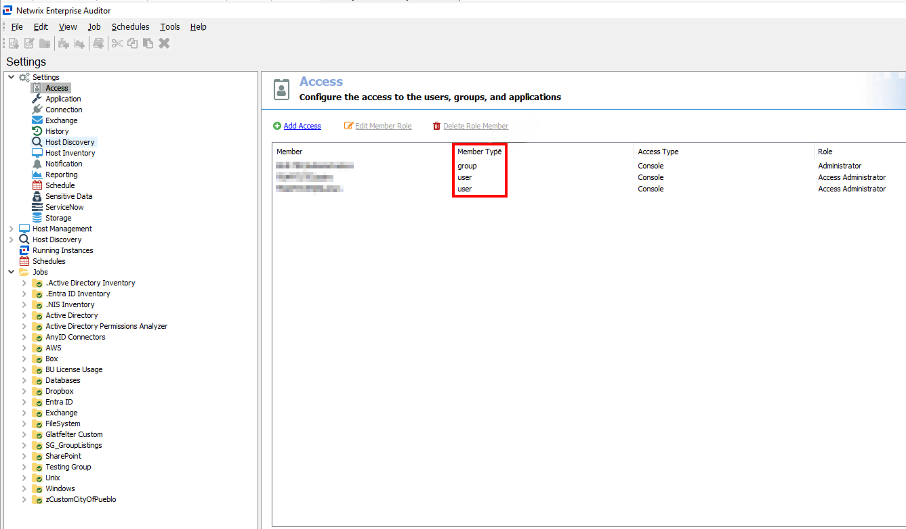

Overview
This article explains how to resolve insecure permissions for Windows service executables in Netwrix Access Analyzer (formerly Enterprise Auditor). Services using executables with weak permissions are at risk of privilege escalation attacks. An unprivileged user could modify or overwrite the executable with arbitrary code, which would then execute the next time the service starts.
This issue occurs when groups such as Users have to modify or write access to
service executables, and the Access node in the Global Settings controls
these permissions. Permissions should be checked both before and after installation to
ensure no changes have been made and proper permissions are in place.
Examples of insecure permissions include:
-
Path:
%stealthaudit%\vaultservice.exe
Used by services: Netwrix Access Analyzer Vault
File write allowed for groups: Users (S-1-5-32-545) -
Path:
%stealthaudit%\web\webserver.exe
Used by services: Netwrix Access Analyzer Web
File write allowed for groups: Users (S-1-5-32-545)
Instructions
To resolve this issue, follow these steps:
-
Review the permissions for the service executables identified by the security scanner:
-
Navigate to the file path (e.g.,
WebServer.exeorVaultService.exe). - Right-click the file, select Properties, and check the Security tab.
-
Navigate to the file path (e.g.,
-
Remove permissions for groups like
Users(S-1-5-32-545) to ensure they cannot modify or write to these files. -
Ensure groups like
Usersdo not have Full Control over directories containing these service executables.
In Access Analyzer:
-
By default, the
Usersgroup does not have Full Control over these files (WebServer.exeorVaultService.exe). -
Permissions are only assigned if configured manually under
Settings > Access. Pay attention to the
Member Typeas shown in the screenshot below.
NOTE: This approach ensures secure operation and mitigates the risk of privilege escalation.
